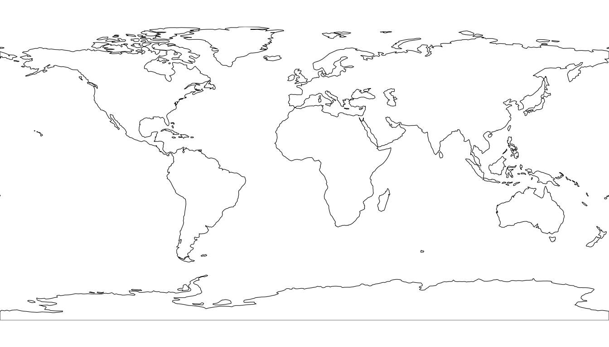
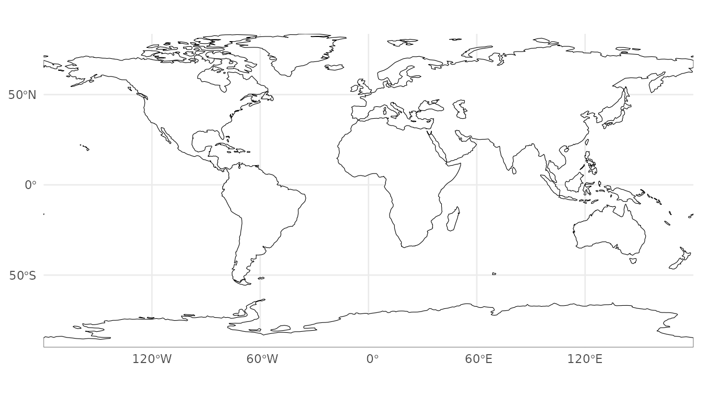
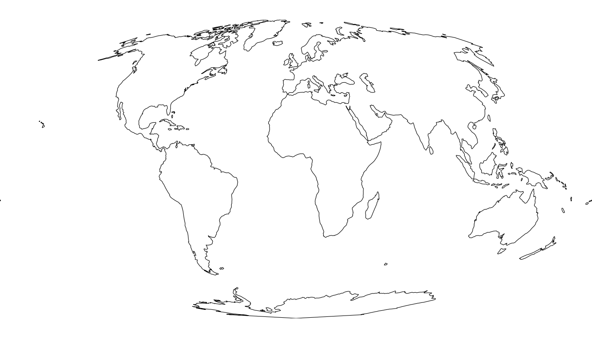
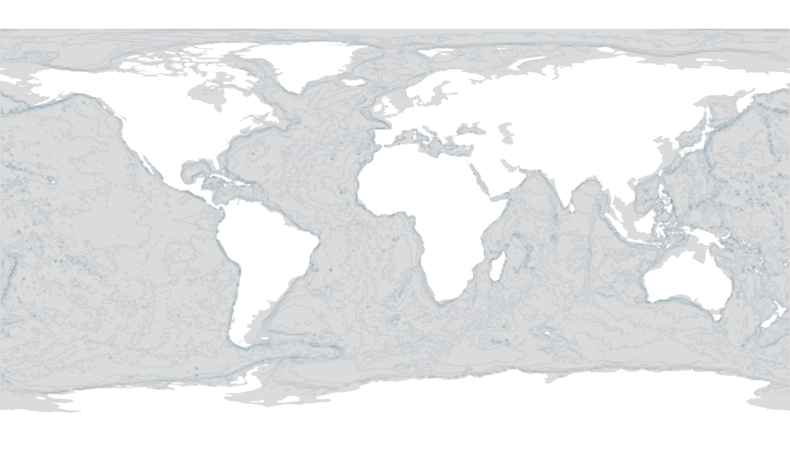
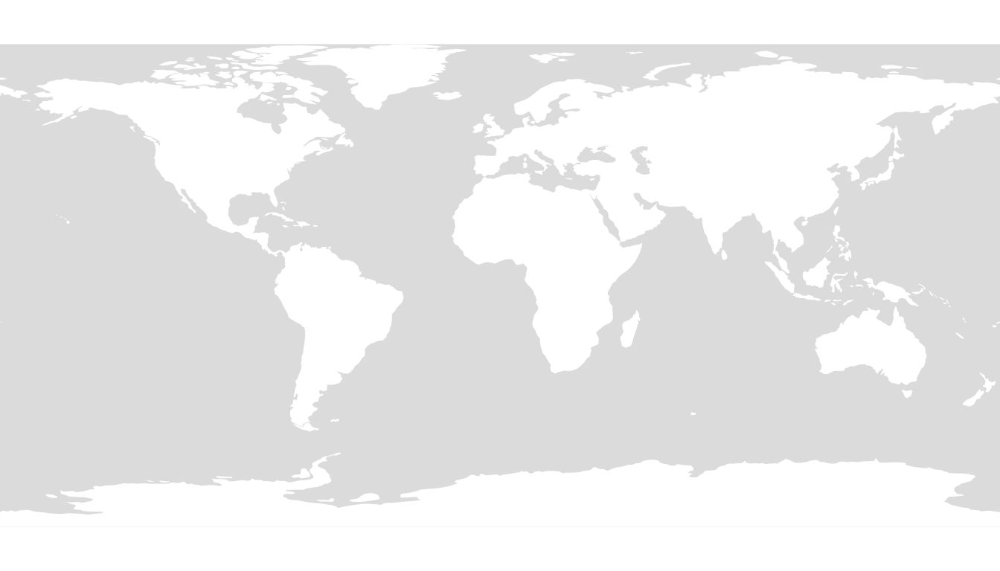
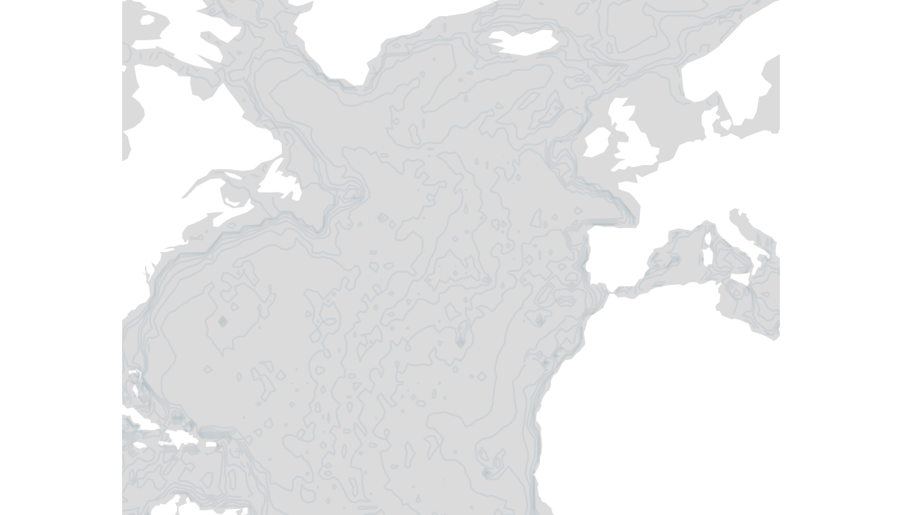

Static Maps
static-maps.RmdThe static-map functions build ggplot2 world maps layer by layer. The workflow is:
- Create a basemap with
blank_map_s()orgrey_map_s(). - Convert raw occurrence records to a spatial grid with one of the
occ_to_*grid()helpers, or fetch pre-gridded data from OBIS. - Overlay the grid with
add_species_data_s().
Basemaps
Blank white map

Keep the graticule for maps where coordinate reference is important:
blank_map_s(keep_graticule = TRUE)
Any PROJ string can be passed to map_crs:
blank_map_s(map_crs = "+proj=moll")
Grey OBIS-style map
grey_map_s() replicates the style used on OBIS taxon
pages: grey ocean, white land, and a semi-transparent GEBCO bathymetry
overlay.

Disable bathymetry when it is not needed:
grey_map_s(add_bathymetry = FALSE)
Regional views are controlled with plot_xlim /
plot_ylim:
grey_map_s(plot_xlim = c(-80, 20), plot_ylim = c(10, 70))
Grid converters (offline)
These functions convert a data frame of occurrence records (columns
decimalLongitude and decimalLatitude) into an
sf polygon layer with one polygon per occupied grid cell.
occ_mock <- data.frame(
decimalLongitude = c(-122.4, -118.2, -87.6, 2.3, 151.2, -43.1, 18.4, 103.8),
decimalLatitude = c(37.8, 34.1, 41.9, 48.9, -33.9, -22.9, 59.3, 1.3)
)Geohash grid
occ_to_geohashgrid(occ_mock)
#> Simple feature collection with 8 features and 2 fields
#> Geometry type: POLYGON
#> Dimension: XY
#> Bounding box: xmin: -123.75 ymin: -35.15625 xmax: 151.875 ymax: 60.46875
#> Geodetic CRS: +proj=longlat +datum=WGS84 +no_defs
#> ID geometry records
#> 75c 1 POLYGON ((-43.59375 -23.906... 1
#> 9q5 2 POLYGON ((-119.5312 33.75, ... 1
#> 9q8 3 POLYGON ((-123.75 36.5625, ... 1
#> dp3 4 POLYGON ((-88.59375 40.7812... 1
#> r3g 5 POLYGON ((150.4688 -35.1562... 1
#> u09 6 POLYGON ((1.40625 47.8125, ... 1
#> u6t 7 POLYGON ((18.28125 59.0625,... 1
#> w21 8 POLYGON ((102.6562 0, 102.6... 1
occ_to_geohashgrid(occ_mock, grid_res = 4)
#> Simple feature collection with 8 features and 2 fields
#> Geometry type: POLYGON
#> Dimension: XY
#> Bounding box: xmin: -122.6953 ymin: -33.92578 xmax: 151.5234 ymax: 59.41406
#> Geodetic CRS: +proj=longlat +datum=WGS84 +no_defs
#> ID geometry records
#> 75cm 1 POLYGON ((-43.24219 -23.027... 1
#> 9q5c 2 POLYGON ((-118.4766 33.9257... 1
#> 9q8z 3 POLYGON ((-122.6953 37.7929... 1
#> dp3w 4 POLYGON ((-87.89062 41.8359... 1
#> r3gx 5 POLYGON ((151.1719 -33.9257... 1
#> u09w 6 POLYGON ((2.109375 48.86719... 1
#> u6t1 7 POLYGON ((18.28125 59.23828... 1
#> w21z 8 POLYGON ((103.7109 1.230469... 1H3 hexagonal grid
occ_to_h3grid(occ_mock)
#> Simple feature collection with 8 features and 1 field
#> Geometry type: POLYGON
#> Dimension: XY
#> Bounding box: xmin: -122.9976 ymin: -34.45959 xmax: 152.6023 ymax: 59.96206
#> Geodetic CRS: WGS 84
#> records geometry
#> 1 1 POLYGON ((18.26105 59.69862...
#> 2 1 POLYGON ((1.882244 49.80503...
#> 3 1 POLYGON ((-87.52625 42.1529...
#> 4 1 POLYGON ((-121.7645 37.6756...
#> 5 1 POLYGON ((-118.0404 33.9461...
#> 6 1 POLYGON ((103.858 1.093918,...
#> 7 1 POLYGON ((-43.12481 -23.832...
#> 8 1 POLYGON ((152.6023 -33.997,...
occ_to_h3grid(occ_mock, grid_res = 4)
#> Simple feature collection with 8 features and 1 field
#> Geometry type: POLYGON
#> Dimension: XY
#> Bounding box: xmin: -122.6357 ymin: -33.99678 xmax: 151.5703 ymax: 59.42504
#> Geodetic CRS: WGS 84
#> records geometry
#> 1 1 POLYGON ((18.40377 59.38198...
#> 2 1 POLYGON ((2.249146 49.03622...
#> 3 1 POLYGON ((-87.52625 42.1529...
#> 4 1 POLYGON ((-122.2748 37.5600...
#> 5 1 POLYGON ((-118.0404 33.9461...
#> 6 1 POLYGON ((103.858 1.093918,...
#> 7 1 POLYGON ((-43.25915 -23.149...
#> 8 1 POLYGON ((151.5336 -33.8956...A5 pentagonal grid
occ_to_a5grid(occ_mock)
#> Simple feature collection with 8 features and 1 field
#> Geometry type: POLYGON
#> Dimension: XY
#> Bounding box: xmin: -132.3253 ymin: -36.13236 xmax: 152.5101 ymax: 62.29494
#> Geodetic CRS: WGS 84 (CRS84)
#> records geometry
#> 1 1 POLYGON ((22.09166 57.81563...
#> 2 1 POLYGON ((-84.19662 44.4558...
#> 3 1 POLYGON ((-129 31.83236, -1...
#> 4 1 POLYGON ((-125.7545 36.2401...
#> 5 1 POLYGON ((-45.08435 -18.344...
#> 6 1 POLYGON ((-1.522731 56.8707...
#> 7 1 POLYGON ((146.3633 -36.1323...
#> 8 1 POLYGON ((98.36003 1.013697...
occ_to_a5grid(occ_mock, grid_res = 4)
#> Simple feature collection with 8 features and 1 field
#> Geometry type: POLYGON
#> Dimension: XY
#> Bounding box: xmin: -123.7136 ymin: -34.26582 xmax: 153.0125 ymax: 62.29494
#> Geodetic CRS: WGS 84 (CRS84)
#> records geometry
#> 1 1 POLYGON ((15 62.29494, 15.6...
#> 2 1 POLYGON ((-89.98879 41.0546...
#> 3 1 POLYGON ((-117.7574 33.6036...
#> 4 1 POLYGON ((-120.0985 40.0151...
#> 5 1 POLYGON ((-47.47328 -23.505...
#> 6 1 POLYGON ((2.781486 47.27974...
#> 7 1 POLYGON ((149.7741 -31.3520...
#> 8 1 POLYGON ((101.6882 0.506195...Preparing grid data for plotting
prepare_grid_data() bins a numeric records
column into ordered factor levels matching the OBIS colour breaks, ready
for scale_fill_manual().
prepare_grid_data(occ_to_geohashgrid(occ_mock))
#> Simple feature collection with 8 features and 3 fields
#> Geometry type: POLYGON
#> Dimension: XY
#> Bounding box: xmin: -123.75 ymin: -35.15625 xmax: 151.875 ymax: 60.46875
#> Geodetic CRS: +proj=longlat +datum=WGS84 +no_defs
#> ID geometry records records_binned
#> 75c 1 POLYGON ((-43.59375 -23.906... 1 10
#> 9q5 2 POLYGON ((-119.5312 33.75, ... 1 10
#> 9q8 3 POLYGON ((-123.75 36.5625, ... 1 10
#> dp3 4 POLYGON ((-88.59375 40.7812... 1 10
#> r3g 5 POLYGON ((150.4688 -35.1562... 1 10
#> u09 6 POLYGON ((1.40625 47.8125, ... 1 10
#> u6t 7 POLYGON ((18.28125 59.0625,... 1 10
#> w21 8 POLYGON ((102.6562 0, 102.6... 1 10Custom break thresholds:
prepare_grid_data(occ_to_geohashgrid(occ_mock), breaks = c(1, 5, 50, 500, 5000))
#> Simple feature collection with 8 features and 3 fields
#> Geometry type: POLYGON
#> Dimension: XY
#> Bounding box: xmin: -123.75 ymin: -35.15625 xmax: 151.875 ymax: 60.46875
#> Geodetic CRS: +proj=longlat +datum=WGS84 +no_defs
#> ID geometry records records_binned
#> 75c 1 POLYGON ((-43.59375 -23.906... 1 5
#> 9q5 2 POLYGON ((-119.5312 33.75, ... 1 5
#> 9q8 3 POLYGON ((-123.75 36.5625, ... 1 5
#> dp3 4 POLYGON ((-88.59375 40.7812... 1 5
#> r3g 5 POLYGON ((150.4688 -35.1562... 1 5
#> u09 6 POLYGON ((1.40625 47.8125, ... 1 5
#> u6t 7 POLYGON ((18.28125 59.0625,... 1 5
#> w21 8 POLYGON ((102.6562 0, 102.6... 1 5Fetching data from OBIS (requires internet)
get_occ_gridded() retrieves raw occurrence records via
the OBIS API and converts them to a spatial grid.
get_occ_tiles() uses the pre-aggregated tile endpoint —
much faster for large taxa.
# Whale shark (taxonid 141438)
grid_geohash <- get_occ_gridded(taxonid = 141438, type_grid = "geohash", grid_res = 3)
grid_h3 <- get_occ_gridded(taxonid = 141438, type_grid = "h3", grid_res = 3)
grid_a5 <- get_occ_gridded(taxonid = 141438, type_grid = "a5", grid_res = 3)
# With date filter
grid_recent <- get_occ_gridded(
taxonid = 141438,
startdate = "2010-01-01",
enddate = "2024-12-31",
type_grid = "geohash",
grid_res = 3
)
tiles <- get_occ_tiles(taxonid = 141438, grid_res = 3)
tiles_r4 <- get_occ_tiles(taxonid = 141438, grid_res = 4)
tiles_dated <- get_occ_tiles(
taxonid = 141438,
startdate = "2020-01-01",
enddate = "2024-12-31",
grid_res = 3
)Plotting occurrence grids
add_species_data_s() overlays a spatial grid on an
existing basemap. By default it zooms to the bounding box of the
data.
blank_map_s() |>
add_species_data_s(grid_data = grid_geohash)Pass auto_breaks = TRUE to let ggplot2 choose break
thresholds automatically:
grey_map_s() |>
add_species_data_s(
grid_data = grid_h3,
auto_breaks = TRUE
)Global view without zooming to the data extent:
grey_map_s() |>
add_species_data_s(
grid_data = tiles,
limit_by_bbox = FALSE
)Custom breaks, colours, and no legend:
blank_map_s() |>
add_species_data_s(
grid_data = tiles,
breaks = c(1, 5, 50, 500),
colors = c("#f7fbff", "#6baed6", "#2171b5", "#084594"),
legend = FALSE
)Regional view — Indo-Pacific:
grey_map_s(plot_xlim = c(30, 160), plot_ylim = c(-40, 35)) |>
add_species_data_s(
grid_data = tiles,
limit_by_bbox = FALSE,
plot_xlim = c(30, 160),
plot_ylim = c(-40, 35)
)